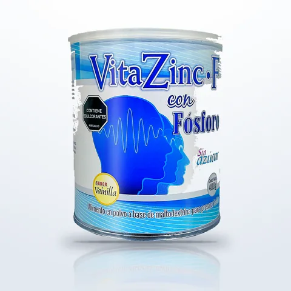
VitaZinc-F
VitaZinc-F Fósforo
- Presentación400 g
- SaborVainilla
Con fosfolípidos y nutrientes energéticos. Complemento nutricional para épocas de estudio y trabajo. Libre de azúcar.
Línea VitaZinc-F
Fórmulas en polvo para cada etapa: niños, embarazo y lactancia, adultos, adultos mayores y personas activas.
VitaZinc-F es la línea más amplia de Euromedical Pharma, laboratorio colombiano que fabrica complementos nutricionales en polvo en Bogotá desde 2009. Son 15 fórmulas en tarro de 400 g, todas libres de azúcar.
Su producto más conocido es VitaZinc-F Fósforo, con fosfolípidos y nutrientes energéticos, pensado para épocas de estudio y trabajo. Para el adulto mayor está VitaZinc-F Silver, una fórmula proteico-calórica con omega 3, 6 y 9, y para huesos y articulaciones, VitaZinc-F Cal+D, con citrato de calcio y vitamina D3.
Para la familia hay opciones como VitaZinc-F Junior (niños de 1 a 12 años), VitaZinc-F Gesta y VitaZinc-F Mamá (embarazo y lactancia, con ácido fólico, hierro y zinc) y VitaZinc-F Adultos. Para personas activas, VitaZinc-F Proteína y VitaZinc-F Advance con HMB, y además Diabéticos (endulzada con sucralosa), Premium, Fibra, Moringa, Factores de Transferencia y Colágeno + Vit E.
Compra VitaZinc-F en nuestra tienda oficial de MercadoLibre o pídelo por WhatsApp. También atendemos droguerías y tiendas naturistas como distribuidores.
VitaZinc-F Fósforo, nuestro producto más vendido.
Niños, embarazo y lactancia, adultos y adultos mayores.
Todas en tarro de 400 g, listas para preparar.
Todas las fórmulas VitaZinc-F son libres de azúcar.
Catálogo
Cada presentación y sabor de la línea VitaZinc-F.

Con fosfolípidos y nutrientes energéticos. Complemento nutricional para épocas de estudio y trabajo. Libre de azúcar.
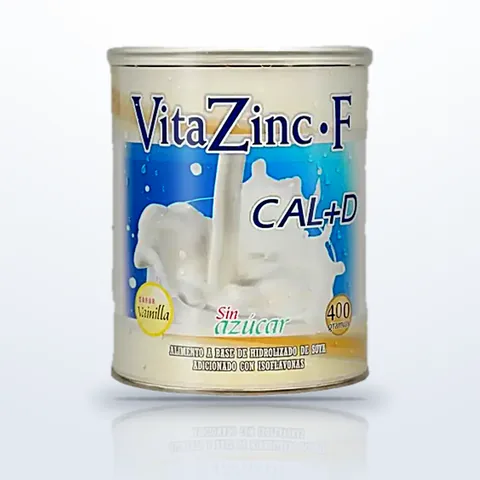
Con citrato de calcio, vitamina D3, fósforo, magnesio, isoflavonas de soya y fibras prebióticas. Libre de azúcar.
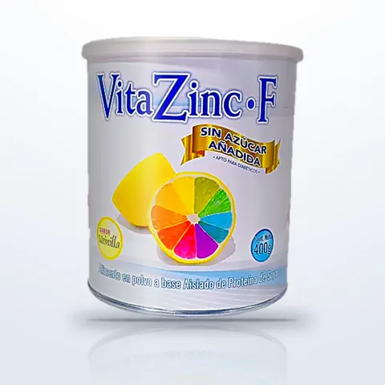
Endulzada con sucralosa y libre de azúcar. Aporta vitaminas, minerales, oligoelementos y fibras prebióticas.
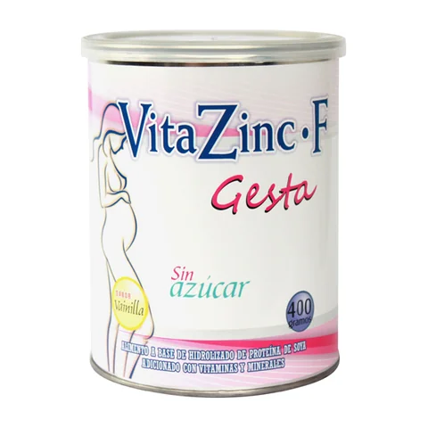
Pensada para la etapa de embarazo y lactancia. Con ácido fólico, hierro, zinc y fibra prebiótica. Libre de azúcar.
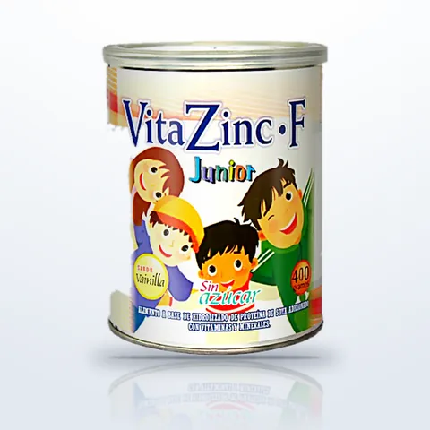
Para niños de 1 a 12 años. Con vitaminas, minerales y oligoelementos, y fibras prebióticas que apoyan la digestión.
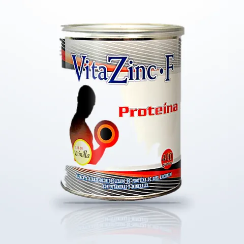
Fórmula proteico-energética pensada para deportistas y personas con alta actividad física. Libre de azúcar.
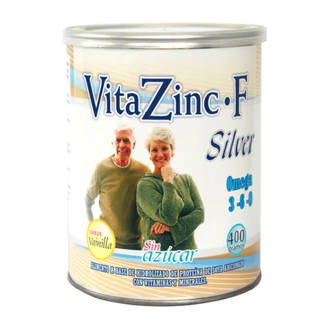
Fórmula proteico-calórica pensada para el adulto mayor, con omega 3, 6 y 9. Libre de azúcar.
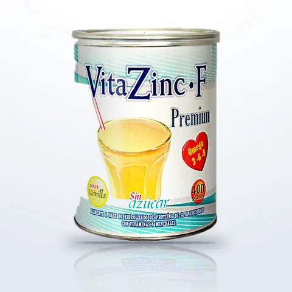
Con antioxidantes, vitaminas, minerales, bioflavonoides y omega 3, 6 y 9. Libre de azúcar.
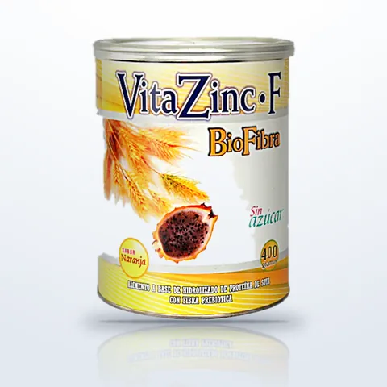
Con fibras solubles e insolubles que contribuyen al tránsito intestinal. Libre de azúcar.
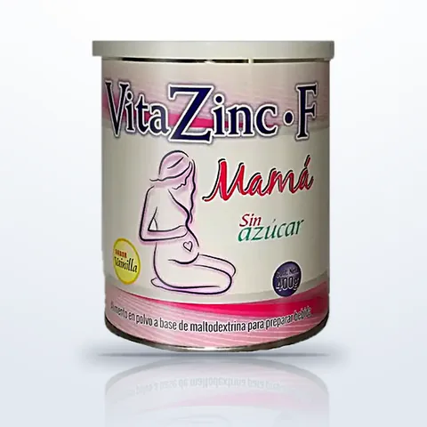
Pensada para la etapa de embarazo y lactancia. Con ácido fólico, hierro y zinc. Libre de azúcar.
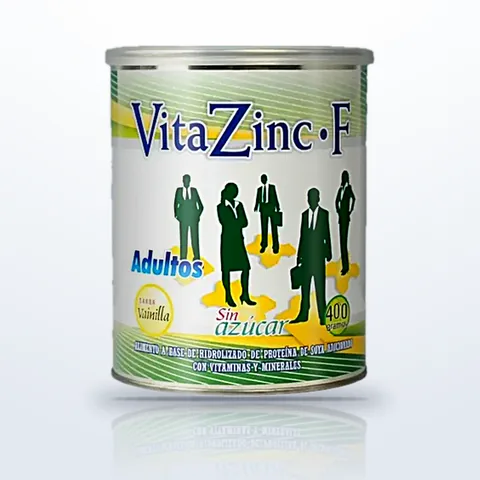
Vitaminas y minerales para jóvenes y adultos con un ritmo de vida activo. Con taurina y omega 3, 6 y 9. Libre de azúcar.
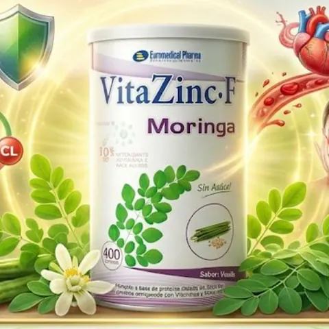
Complemento nutricional en polvo con moringa. Sin azúcar.
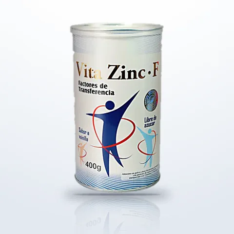
Fórmula en polvo con factores de transferencia para complementar tu bienestar diario. Libre de azúcar.
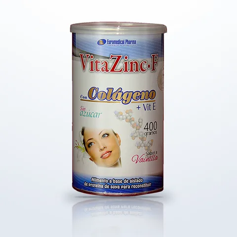
Colágeno con vitamina E, para complementar el cuidado de piel, cabello y uñas. Libre de azúcar.
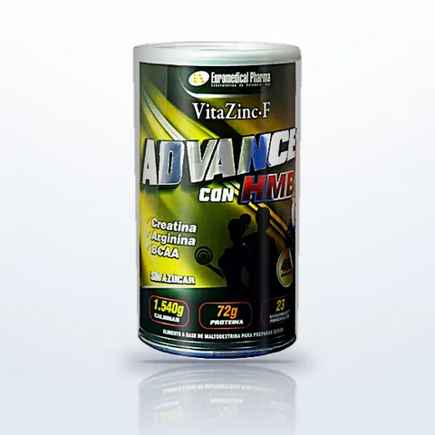
Con HMB, creatina, arginina y BCAA, para personas que entrenan. Sin azúcar.
Nuestra tienda en MercadoLibre
Encuentra nuestros productos en la tienda EUROMEDICALPHARMA, con pago en cuotas y envío a todo el país.
Somos parte de Mercado Envíos Full: entregas en menos de 24 horas en Bogotá y en menos de 72 horas en otras ciudades principales.
★ 4,6 / 5
VitaZinc-F Fósforo: +500 vendidos y 165 calificaciones.
Venta al por mayor
Te enviamos el catálogo y la lista de precios para distribuidores.